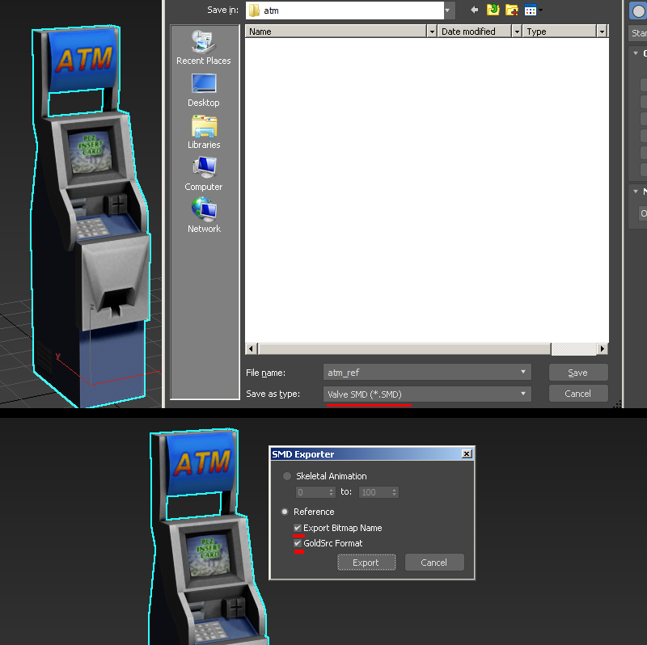
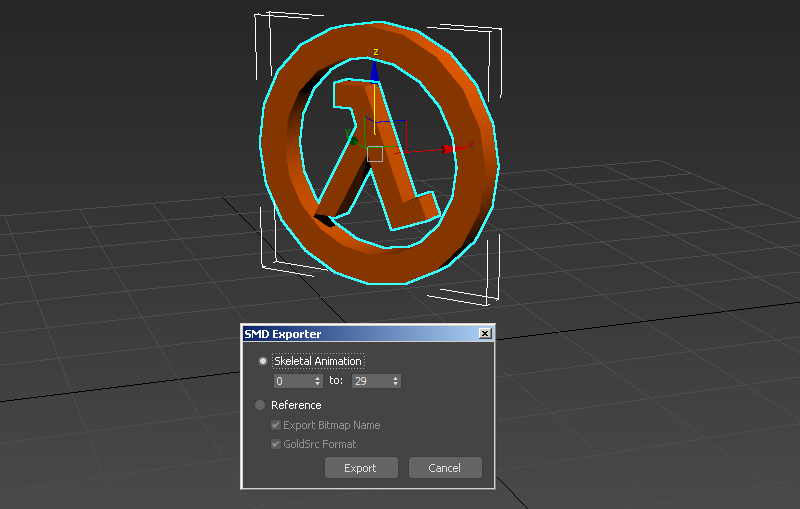
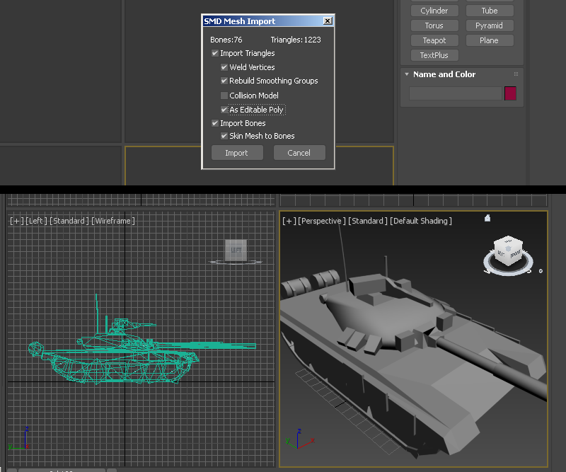
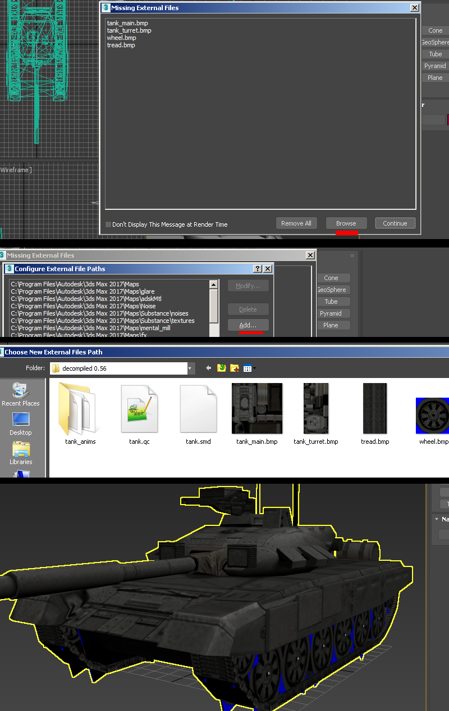
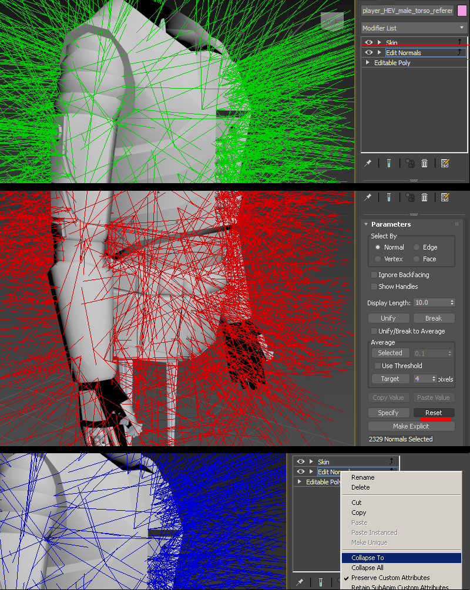
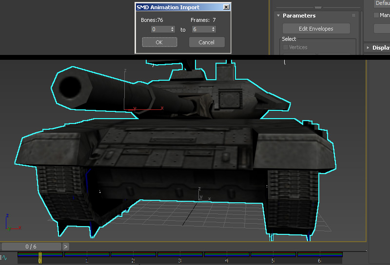

3D Studio Max With Game Zombies Tools

"Game Zombies" tools can be downloaded here
(Old FacePunch Dev thread can be found here)
Supported versions: 3DS Max 2014~2022
The 3DSmax exporters will export any unskinned mesh with its own node, so if you don't have a skeleton&skin modifier, the exporter will still export your mesh(es). If your model has been scaled/editied extensivley, Id reccomend reset Xform before exporting.
Jump to Exporting Animations Jump to Importing Meshes Jump to Editing Imported Smoothing Jump to Importing Animations
Exporting Reference Mesh
1)Set your pivot point if you havent already. Note that prop models with pivot point below the main grid may cause lighting issues in your map, so its best to center to your model. Since this example is a static model you will not need a skin modifier. Go to File> Export > Valve SMD as type. Then at the export window, check "Reference".
Lastly check both "Export Bitmap Name" and "GoldSrc format" checkboxes. Save and name it with something to identify it as the reference mesh such as "name_reference"
Note this exporter will automatically recognize if explicitly set vertex normals are in your mesh so that is why there is no option for that needed unlike older exporters.

Continue to Compiling
1)Make note of your sequence range and how many frames you are exporting. Export as before only, choose the "sequence" option.

It should be noted that you are not confined to animating at 30 keyframes frames per second, as you can set different speeds in your QC compile script. So for example if you just need a very simple idle sequence you can set your 3dsmax timeline to custom "FPS" to say 10fps, then set 10fps in your QC script on compile. This will play in game and interpolate the frames accordingly. You can play with tweaking speeds either on the 3deditor side and/or the QC script side.
Continue to Compiling
1)Go to File> Import > Valve SMD as type and import your SMD. You will be promted with an options window, but for the most part these default settings are fine. If your model has multiple meshes, you can keep using this import option to import more SMD's and each mesh will combine with existing skeletons.

2)Upon import the materials are not loaded. To recconect them ive found the fastest way to do so is save your document, and reopen it which gives you the "Missing Materials" option window. Go to "Browse" button and then on the "Configure File Paths" window click the "Add" button. You will then navigate to your folder of textures. Once done, close the windows and you will see your model with materials.

General editing info to note and working with Explicit vertex normals
Some important things to note about about working with imported geometry in 3dsmax is that if you want to make minor edits (say like UV changes with UVW Unwrap modifier) with the skinning intact, then create the modifier below the "Skin" modifier in the stack.'
SMD imports are done with "explicit normals" for smoothing. With Game Zombies tools, by default it does recreate 3ds smoothing groups but on import its still got explicitly set in the mesh. To be able to work with the smoothing groups again you first need to clear the explicit normals.
You will need to add an "edit normals" modifier under the Skin, go cmd-A to select all,and press "reset." After deselecting the sticks should be blue to indicate they are now in face render mode and able to be editied by smoothing groups and auto smoothing in editable poly. Collapse the edit normals down. Now open your edit poly and you can now play with the smoothing groups.

Continue to Compiling
1)Go to File> Import > Valve SMD as type and import your SMD. You will be promted with a window to choose the range of frames to import. By default its full range of frames in SMD. The animation will be loaded onto the model or if no model loaded will load in as bones.
The timeline will be adjusted accordingly to the amount of frames imported. Refer to the models QC file to set a custom FPS for the timeline to match what the animation was authored for if needed.
